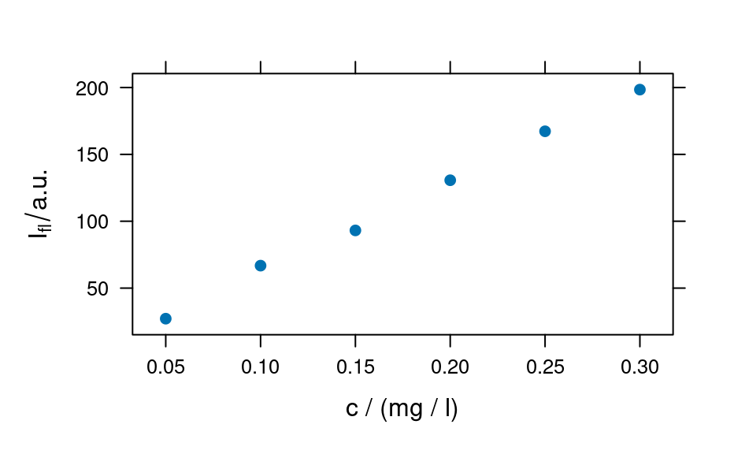
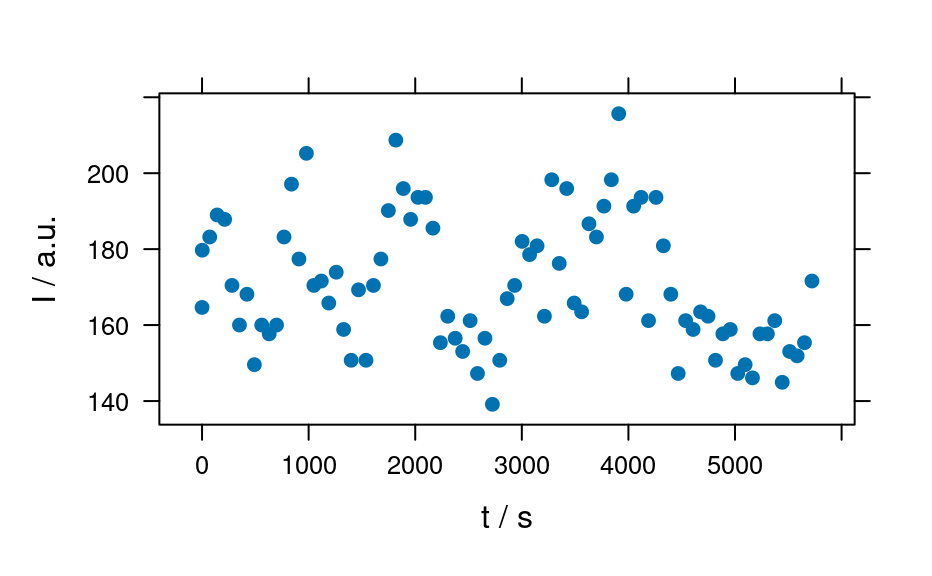
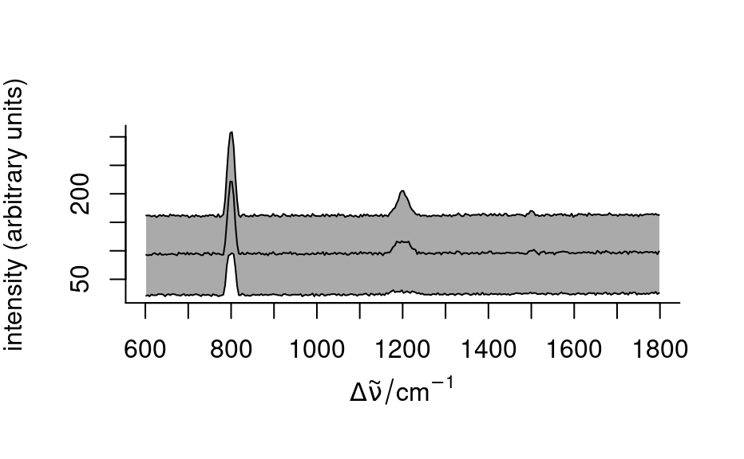

The plot method for hyperSpec objects is a switchyard to plot_spc(),
plotmap(), and plotc(). The function also supplies some convenient
abbreviations for frequently used plots (see 'Details').
# S4 method for hyperSpec,missing
plot(x, y, ...)
# S4 method for hyperSpec,character
plot(x, y, ...)hyperSpec object.
String ("spc", "map", etc.) to select what type of plot should
be produced. See section 'Details' for available values.
If y is missing, plot(x) behaves like plot(x, y = "spc").
Arguments passed to the respective plot function
Supported values for y are:
calls plot_spc() to produce a spectra plot.
plots mean spectrum +/- one standard deviation
plots 16th, 50th, and 84th percentile spectra. If the
distributions of the intensities at all wavelengths were normal, this
would correspond to "spcmeansd". However, this is frequently not the
case.
Then "spcprctile" gives a better impression of the spectral data set.
like "spcprctile", but additionally the 5th and
95th percentile spectra are plotted.
calls plotmap() to produce a map plot.
calls plotvoronoi() to produce a Voronoi plot
(tessellated plot, like "map" for hyperSpec objects with
uneven/non-rectangular grid).
calls plotmat() to produce a plot of the spectra matrix
(not to be confused with graphics::matplot()).
calls plotc() to produce a calibration (or time series,
depth-profile, or the like).
plots a time series: abbreviation for
plotc(x, use.c = "t").
plots a depth profile:
abbreviation for plotc(x, use.c = "z").
plot_spc() for spectra plots (intensity over wavelength),
plotmap() for plotting maps, i.e. color coded summary value on two
(usually spatial) dimensions.
plot(flu)
plot(flu, "c")
#> Warning: Intensity at first wavelengh only is used.

plot(laser, "ts")
#> Warning: Intensity at first wavelengh only is used.

spc <- apply(faux_cell, 2, quantile, probs = 0.05)
spc <- sweep(faux_cell, 2, spc, "-")
plot(spc, "spcprctl5")
plot(spc, "spcprctile")

plot(spc, "spcmeansd")
### Use plot_spc() as a default plot function.